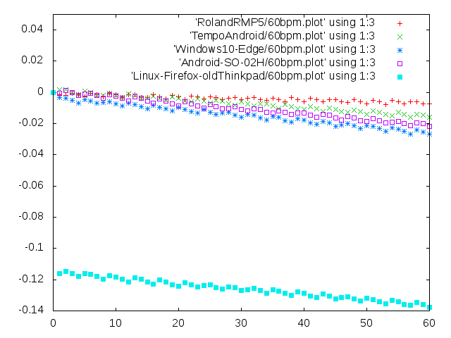
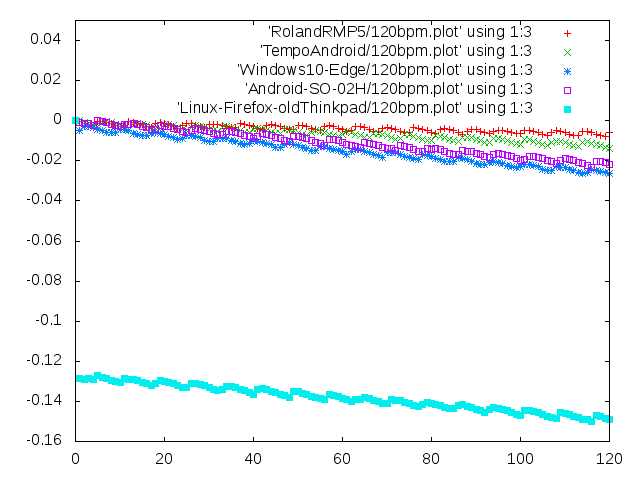
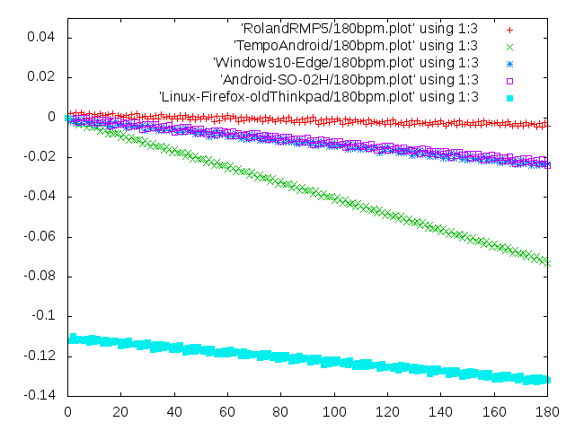
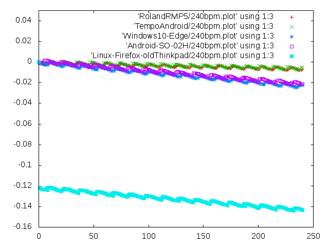

Fig.1-1 60bpm (60sec) (actual playback time) - (theoretical ideal time)
|
RolandRMP5
# seq time diff interval timefix = 0.999634855237734
0 0 # first note (will be omitted here after)
1 0.998478277710223 -0.00152172228977654 0.998478277710223
(omit)
# Diff mean = -0.00399574043086079, cv = -0.465593719286576
# Interval mean = 0.999880815393865, cv = 0
TempoAndroid
# seq time diff interval timefix = 0.999634855237734
1 1.00178806871592 0.00178806871591553 1.00178806871592
(omit)
60 59.9840521369058 -0.0159478630942118 0.998411302174915
# Diff mean = -0.00732362482743205, cv = -0.670160375389208
# Interval mean = 0.999734202281763, cv = 0
Android-SO-02H
# seq time diff interval timefix = 0.999634855237734
1 0.999385946158779 -0.000614053841220819 0.999385946158779
(omit)
60 59.9783642145795 -0.0216357854205071 0.998502268946744
# Diff mean = -0.0105865662795749, cv = -0.60193780467709
# Interval mean = 0.999639403576325, cv = 0
Windows10-Edge
# seq time diff interval timefix = 0.999634855237734
1 0.996960831999972 -0.00303916800002779 0.996960831999972
(omit)
60 59.9733310530834 -0.0266689469166295 0.998636220017353
# Diff mean = -0.0149234154567007, cv = -0.44246669142329
# Interval mean = 0.999555517551389, cv = 0
Linux-Firefox-oldThinkpad
# seq time diff interval timefix = 0.999634855237734
# 1st note delayed
then 2nd note was played earlier and interval became short
1 0.883986099200425 -0.116013900799575 0.883986099200425
(omit)
60 59.8623985742931 -0.137601425706926 0.998391309477817
# Diff mean = -0.126155334867884, cv = -0.049050851570485
# Interval mean = 0.997706642904885, cv = 0
|

Fig.1-2 120bpm(60sec)
|
RolandRMP5
# seq time diff interval timefix = 0.999634855237734
1 0.499386584996259 -0.000613415003740514 0.499386584996259
(omit)
120 59.9939815099229 -0.00601849007713184 0.501948649130235
# Diff mean = -0.00389274185190754, cv = -0.472071705421503
# Interval mean = 0.499949845916024, cv = 0
TempoAndroid
# seq time diff interval timefix = 0.999634855237734
1 0.499885402789023 -0.000114597210976897 0.499885402789023
(omit)
120 59.9862073496537 -0.0137926503463106 0.499523534971431
# Diff mean = -0.00671629380343126, cv = -0.507799546618484
# Interval mean = 0.499885061247114, cv = 0
Windows10-Edge
# seq time diff interval timefix = 0.999634855237734
1 0.494921216097913 -0.00507878390208749 0.494921216097913
(omit)
120 59.9735569705607 -0.0264430294393492 0.499431568564738
# Diff mean = -0.0149188475898261, cv = -0.443203466794944
# Interval mean = 0.499779641421339, cv = 0
Android-SO-02H
# seq time diff interval timefix = 0.999634855237734
1 0.499205651087461 -0.000794348912538545 0.499205651087461
(omit)
120 59.9783422226127 -0.0216577773873254 0.499298617128993
# Diff mean = -0.0111270743083914, cv = -0.573180370647238
# Interval mean = 0.499819518521772, cv = 0
Linux-Firefox-oldThinkpad
# seq time diff interval timefix = 0.999634855237734
1 0.37154228372505 -0.12845771627495 0.37154228372505
(omit)
120 59.8508357979225 -0.149164202077465 0.499226643419419
# Diff mean = -0.138350602334498, cv = -0.0450205118242414
# Interval mean = 0.498756964982688, cv = 0
|

Fig.1-3 180bpm(60sec)
| Similar except for TempoAndroid.
TempoApp played the beat a little too fast only at 180bpm.
Reason is unknown.
|

Fig.1-4 240bpm(60sec)
| TempoAndroid was OK at 240bpm.
|